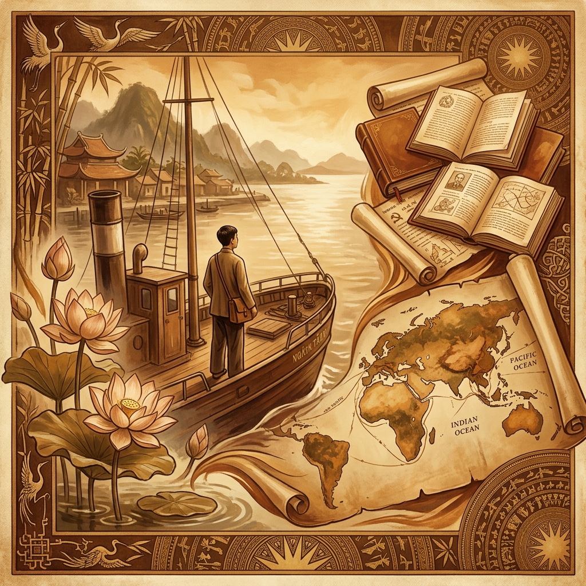

Hành trình từ yêu nước đến Chủ nghĩa Mác-Lênin: Nguồn gốc hình thành Tư tưởng Hồ Chí Minh

"Tôi muốn đi ra ngoài, xem nước Pháp và các nước khác. Sau khi xem xét họ làm thế nào, tôi sẽ trở về giúp đồng bào tôi." — Nguyễn Tất Thành (Hồ Chí Minh), 1911
Tư tưởng Hồ Chí Minh không xuất hiện một cách ngẫu nhiên mà là kết quả của một quá trình tìm tòi, học hỏi bền bỉ suốt hàng chục năm của Nguyễn Ái Quốc — Hồ Chí Minh. Để hiểu bản chất và giá trị của hệ tư tưởng này, trước tiên cần nắm vững các nguồn gốc cơ bản đã tạo nên nó.
1. Nguồn gốc tư tưởng — Văn hóa truyền thống dân tộc
Hồ Chí Minh sinh ra và lớn lên trên mảnh đất xứ Nghệ — vùng đất có truyền thống yêu nước và đấu tranh bất khuất. Bối cảnh lịch sử đó hun đúc trong Người một lòng yêu nước nồng nàn, ý chí kiên cường và ý thức về phẩm giá con người. Tinh thần "dân vi quý, xã tắc thứ chi, quân vi khinh" (Mạnh Tử) của Nho giáo được Người tiếp thu có chọn lọc, đặc biệt là tư tưởng nhân nghĩa, thương dân.
Văn hóa truyền thống Việt Nam với đức tính cần cù, bất khuất, tinh thần cộng đồng gắn kết là nền tảng đầu tiên và quan trọng nhất hình thành nhân cách và phương thức tư duy của Hồ Chí Minh.
2. Tinh hoa tư tưởng nhân loại
Trong hành trình bôn ba tìm đường cứu nước từ năm 1911, Nguyễn Ái Quốc đã đến hơn 30 quốc gia, làm nhiều nghề để kiếm sống và học hỏi. Người tiếp thu có chọn lọc những giá trị tiến bộ từ:
-
flare
Cách mạng Pháp 1789: Tư tưởng về tự do, bình đẳng, bác ái — quyền con người phổ quát mà Người nâng lên thành quyền dân tộc tự quyết.
-
flare
Cách mạng Mỹ 1776: Bản Tuyên ngôn Độc lập với câu mở đầu bất hủ được Người trích dẫn trong Tuyên ngôn Độc lập Việt Nam 1945.
-
flare
Phật giáo & Nho giáo: Tinh thần từ bi, bác ái, đạo đức nhân nghĩa làm phong phú thêm tư tưởng về con người và đạo đức cách mạng.
3. Chủ nghĩa Mác-Lênin — Nền tảng thế giới quan và phương pháp luận
Năm 1920, khi đọc "Luận cương về vấn đề dân tộc và thuộc địa" của V.I. Lênin, Nguyễn Ái Quốc đã tìm ra con đường cứu nước đúng đắn. Người khóc vì vui mừng khi thấy đây chính là con đường giải phóng dân tộc Việt Nam. Chủ nghĩa Mác-Lênin trở thành thế giới quan khoa học và phương pháp luận cách mạng, là hạt nhân cốt lõi của tư tưởng Hồ Chí Minh.
Người vận dụng sáng tạo Chủ nghĩa Mác-Lênin vào hoàn cảnh thuộc địa phương Đông — một đóng góp lý luận vô cùng quý giá, mở ra khả năng giải phóng cho hàng trăm triệu người dân các nước thuộc địa trên thế giới.
Tài liệu tham khảo: Giáo trình Tư tưởng Hồ Chí Minh (Bộ GD&ĐT, 2021). Tổng thuật về hành trình bôn ba tìm đường cứu nước của Nguyễn Ái Quốc và quá trình hình thành tư tưởng cách mạng.
open_in_new Xem chi tiết